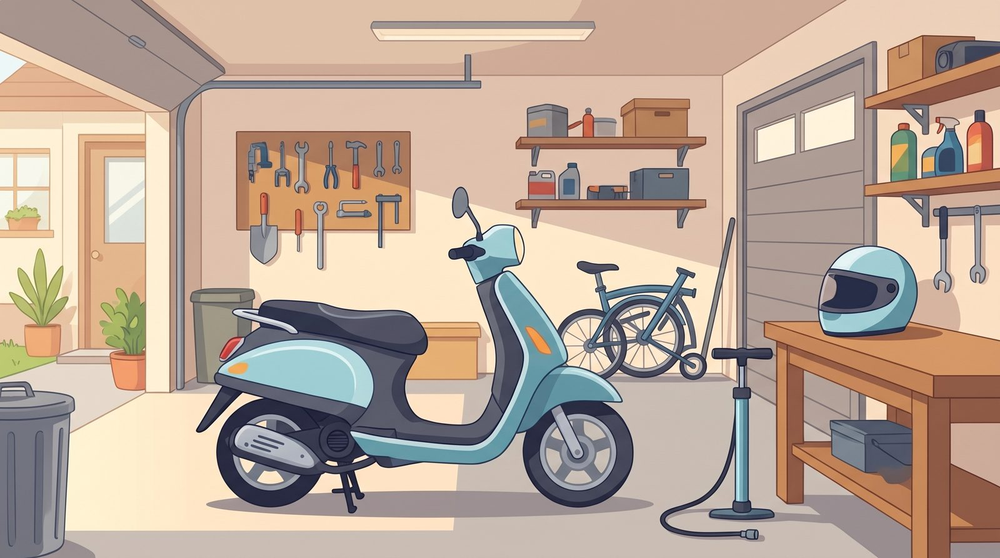
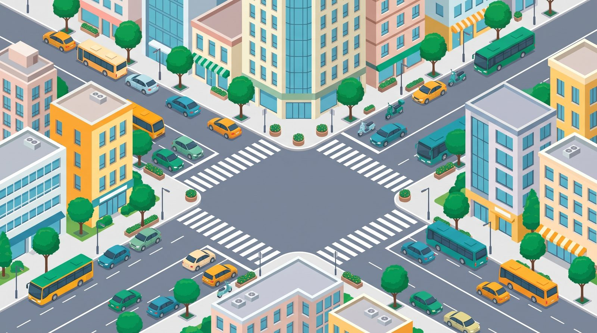
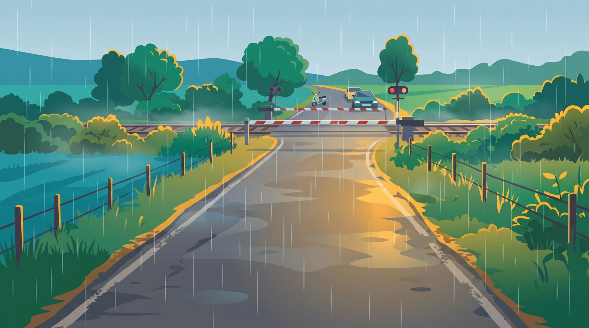

機車筆試好過關
好過關
301 班 12 號
閱讀設定
設定
回首頁
考照之路地圖
92 關，可以從任何一關開始。
已過關 (11)
練習中 (1)
未練習 (80)
清單檢視

路段 1
出發前準備
行車檢查、貨物裝載
11 / 11 關過關
行車檢查 1
行車檢查 2
貨物裝載 1
貨物裝載 2

路段 2
市區路口
路口安全、轉彎、注意大型車
1 / 12 關過關
路口安全 1
80
分
路口安全 2
📍
你在這裡
轉彎 1
路段 3
一般道路
行駛注意事項、正確使用燈光
0 / 20 關過關
行駛注意 1
使用燈光 1

路段 4
特殊路況
平交道、禁止不當行為
0 / 31 關過關
平交道 1
禁止不當 1
路段 5
終點考場
事故預防處理、情境題
0 / 18 關過關
事故預防 1
情境題 1
🏁
考照之路終點站
完成全部 92 關，恭喜你具備萬全騎乘實力！可隨時前往 50 題全真模擬考挑戰及格！
回學習首頁
繼續挑戰：路口安全 2